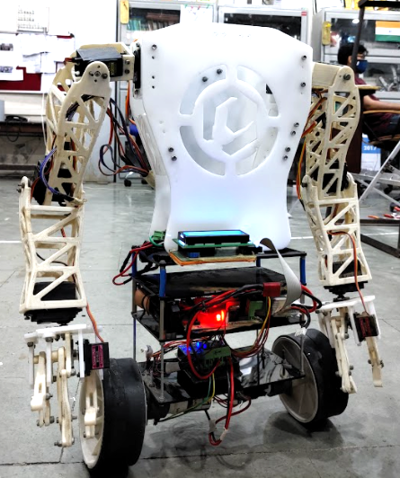

|
I am a Final year Undergraduate student at College of Engineering Pune (COEP) and an active member of Robotics and Automation Laboratory, COEP where I learn & explore the amazing field of Robotics and Computer Vision. |
{kind=link}
|
I'm interested in Robotics, Automation, Computer vision and Image Processing. |

|
Research Intern
NTU-India Connect Scholarship Program Singapore, June 2021 – Aug 2021 Research Guide: Dr. Xie Ming • Under guidance of Dr. Xie Ming worked on Collaborative UAV-UGV system for Search and Rescue Task. • Implemented a Octomap based 3-D mapping approach using UAV and built a 2-D occupancy grid map of the surrounding which can further be used by UGV for navigation. • Built a Human Detection system on the UAV using Yolo v3 tiny model in order to detect persons to be rescued. |
|
Research Intern -
Mitacs Globalink Internship Program Canada, May 2021 – Jul 2021 Research Guide: Dr. Scott Nokleby • Under guidance of Dr. Scott Nokleby worked on the project of developing an Autonomous Electric Wheelchair for children with physical disability. • Built a simulation model of a wheelchair, added gazebo sensor plugins, implemented complete navigation stack, used RTABMap & Octomap mapping approach, and built a novel algorithm for detecting negative obstacles. |
|
|
|
Undergraduate Research Member
Centralized Robotics and Automation Lab, COEP Pune, India, Mar 2019 – Present Research Guide: Dr. Shantipal Ohol • Under guidance of Dr. Shantipal Ohol worked on different collaborative projects, conducted various workshops & participated in Robotics competitions. • Lab has the recognition of being the First “The Robotics Society(TRS), India - Student Chapter” of India. • Briefly worked on 3-wheel omni-directional Mobile robot, implementation of FreeRTOS, State-estimation, Perception & Control of Mobile robot and also explored NAO-6 Humanoid Robot. |

|
Robotics Intern
Binary Robotics Pune, India, Nov 2020 – Jan 2021 • Worked from proof of concept to development of ROS based Heavy duty Autonomous Mobile Robot capable of 500kg payload for autonomous navigation in a dynamic environment such as warehouse, healthcare facility,etc. • Developed Electronic Design System, performed simulation on Gazebo and used Lidar point clouds & wheel odometry information in order to implement multiple SLAM algorithms. |

|
Intern
Exa Mobility Pune, India, Apr 2020 – Apr 2020 • Worked on MEMS motion sensor calibration & implemented Sensor fusion Algorithms on IMU data. • Also worked on GPS & Kalman filtering to develop & implement GPS Aided Inertial Navigation System. |
|
Here you can find 2 Reserach Papers that have been published by me until now. |
|
Mihir Kulkarni, Pranay Junare, Mihir Deshmukh, Priti P. Rege International Conference on Computing, Communication and Applications (ICCCA),2021 Link |
|
|  |
Pranay Junare, Shaunak Mahajan, Prithvish Taukari, Anirudh Nallawar, Dr. Shantipal Ohol Aerospace and Defence Related Mechanisms Symphosium (ARMS),2021 Link |